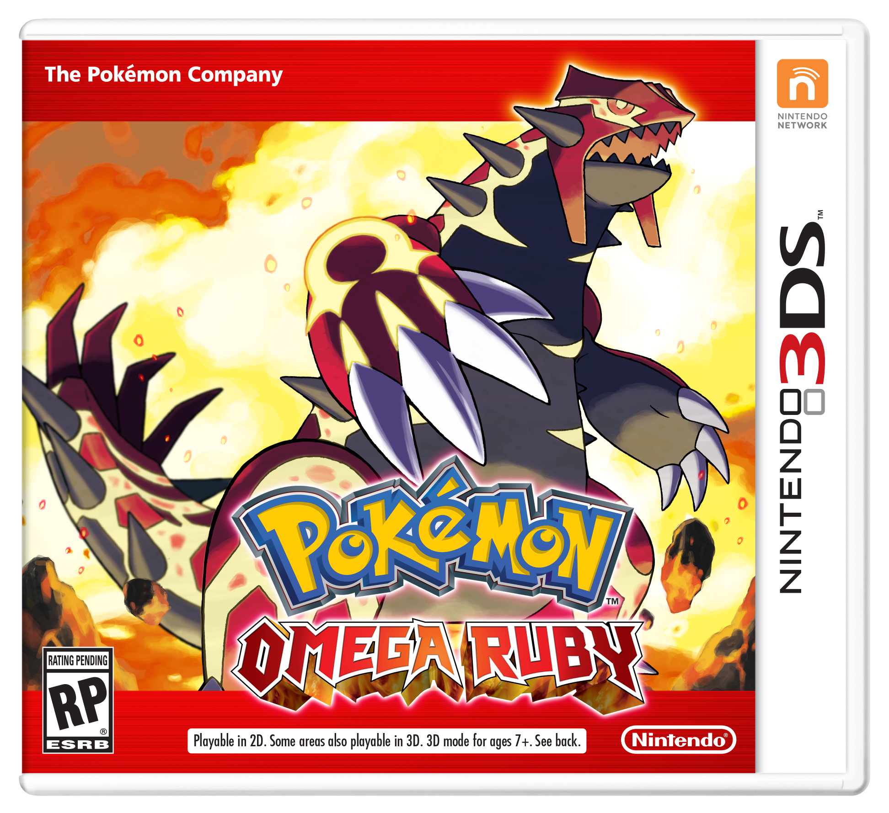

LATEST REVIEW: POKEMON OMEGA RUBY (NINTENDO 3DS)

Pokemon Omega Ruby is a remake of the original GBA game Pokemon Ruby, released in 2002. A fun fact: both of these games came out November 21! I played the original game, so my feelings of nostalgia were overflowing. They added a really nice touch at the beginning of the game, where the protagonist is riding in the back of the moving van (which no one will ever understand). The protagonist is playing the original game, with original music and all. Meta. I shed a tear. Or ten. Of course, I picked the same starter I did as a kid, Torchic, for old times sake. The game has the same style as the other 3DS Pokemon games, Pokemon X and Y. It's really incredible if you think about how we were once at pixelated sprites, and now have animated 3D battles. It's pretty awesome.
So far in the game, I have gotten 6 out of 8 gym badges. School prevents me from playing as much as I would like. The remixes of the original soundtrack are really great. They moderized it and I enjoy it a lot. In Pokemon X and Y, they introduced mega evolutions, and those are back in this game. Three of my pokemon can mega evolve so far. Latios, Diance, and Altaria. Diance was a new Pokemon from X and Y, which was given away in a GameStop distribution. However, you had to get the mega stone to mega evolve it in Pokemon ORAS (Omega Ruby and Alpha Sapphire). They added new elements to the original story in order to account for these new mega evolutions, but all the same characters and basic plot elements are still there, which I was happy about.
Basically, if you're a huge Pokemon geek or played these original games, I would go out and buy this right now. It's fantastic and I would highly recommend. I can't wait to play more!